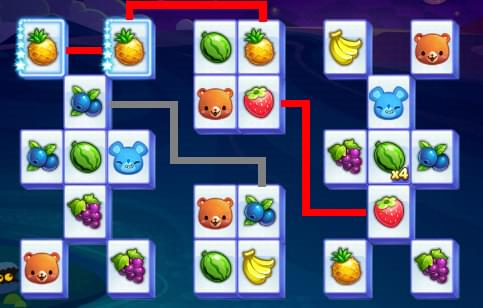
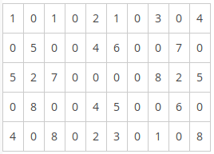
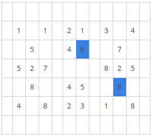
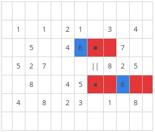
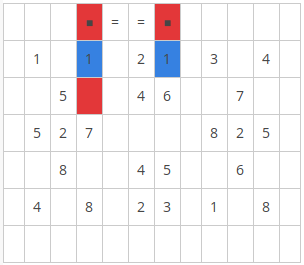
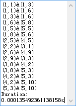

算法是程序的灵魂，优秀的算法可以高效率解决实际问题。继腾讯安卓游戏天天爱消除之后又一款十分好玩的游戏——天天连萌，其实就是以前的连连看，在实现算法之前博主从来没有玩过这类游戏，只是看别人玩过，因此在实现之前必须清楚游戏的规则，必须注意许多细节，否则将严重影响算法的准确性，甚至实现了一个完全错误的算法。
游戏规则可以总结出来：
1.两相消元素必须是同种，这里的同种包括被赋予了某些特殊功能的元素。
2.相消元素之间的连线的直角拐角必须小于等于2个。
如图所示，红线相连的即可消除，灰线则不符合规则。

天天连萌是一个10*5的固定矩阵，每个不同元素可以简记为1,2,3,4…由于含有空白元素，这里约定空格记为0，因此上图中是这样一个数字化的矩阵：

现在要解决的问题的办法有两种：
1.直接查找，即取任意一个元素，向四个方向进行查找，0代表着”路”可以沿着”路”进行查找同种元素，遇到不同元素还要”拐弯”，三个方向，然后继续沿着0查找，只能拐两次弯。这种方法最容易想到，但是复杂度可想而知， 同时还要判断边界条件。
2.找两个相同元素，通过某种方法验证这两个是否可以相消。本文采用的是第二种方法，具体方法是对元素作扩展，这里的扩展是指包括自己在内的上下左右空白区域。再判断扩展区域是否可以连通。
现在将该矩阵四周填充路径0，因为连线可以经过整个矩阵外围。
为了更好说明，将0用空白代替。

任取两个相同元素，比如上面用蓝色标记的两个6，对两个点分别作水平扩展，如下图：

再将扩展区域进行垂直投影，找出公共(重叠)部分，比如上图用黑框标注的单元格，再判断他们是否可以直线连通 ，如果可以直线连通那么这两个6就满足规则顺利消除(显然上图中的两个6可以消除 )。如果不能直线连通，那么再作垂直扩展：

如上图的两个1的垂直扩展区域可以直线连通，但水平扩展区域不能，满足两者之一即可消除。
实现代码如下：
将数据放进二维数组：
1 | m_data = new int[5, 10] |
考虑到算法的时间复杂度，这里事先将所有相同元素的坐标放进动态数组。
这里采用ArrayList现成的动态数组进行存放坐标点
1 | m_same = new ArrayList[10];//假定只有10种 |
下标代表种类，比如是0的格子放在m_same[0] 中，以此类推…
算法最重要的一步是计算扩展点位：
1 | private void findEx(ref point pt, out ArrayList rowEx, out ArrayList colEx) |
为了简化代码，将竖直方向和水平方向的遍历通过一个k变量来作偏移，通过flag1,flag2标记是否到了”头”.
下面将扩展点位进行连通判断：
1 | private bool Available(ref point[] pt) |
之后再将m_same中的元素求组合数，通过上面的函数进行验证就行了。
1 | point[] pt = new point[2]; |
实际运算结果如下图，这里采用了高精度计时器进行算法计时：
